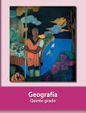

Es un trabajo de investigación de temas divesos de
Historia con algo de Geografia
Geográfia
1.-los climas del mundo Para conocer el clima de un lugar necesitas unos aparatos como el termometro y el pluvíometro y los elementos del clima como la temperatura la velocidad del viento y la cantiadad de lluvias estoas de dividen en 5 tipos de climas el polar,el tropico, el seco,el frío y el templado estos tambien denominan la cantidad de frora y fauna. El clima polar de caracterisa de no tener ningun mes que supere los 10 grados celcius y por que estan en las altitudes mas altas. El tropical son los que estan en la zona calida desde el ecuador hasta los tropicos tienen temperaturas elevadas y muchas lluvias. Templado este clima se encuentra en el norte su temperatura media es de 10 a mas grados celcius. frío este clima su mes mas bajo tiene -3 grados y su mejor mes tiene mas de 10 grados y se encuentran cerca del circulo polar. seco este clima se encuentra en las altitudes 35 y 40 su dia prome dio es de 50 grados y sus noches son muy frías.
2.-los tesoros naturales del planeta. regiones naturales Regiones tropicales. las regiones selvatica y de bosque tropical son las zonas mas humedas del planeta y se localizan en la franja de los climas tropicales. Ahi corren los rios mas caudalosos como el amazonas y el congo En esta region los arboles son muy densos. Hay varias especies de hongos. Su vegetacion consta de arboles , como el palo de rosa,la caoba y el cedro y plantas trepadoras la fauna se compone de animales como mono,ardilla voladora,mandril,anaconda,insectos,jaguar,tapir,pecarí,papagayo y quetzal. Regiones secas: el desierto se localiza en los cimas secos y debido a su extrema aridez, no es del todo apto para el ser humano. En esta region se encuentran plantas cactaceas que poseen hojas en forma de espina ademas de profundas raices para buscar el agua subterranea. En cuanto a la fauna encontramos animales como serpirntes escorpiones roedores e insectos. Climas templados: las zonas de vegetacion maditerranea de clima templado se hallan alrededor del mar mediterraneo en algunas partes de america del norte y del sur.La vegetacion esta constituida por encino laurel y alcornoque.La fauna de la region esta formada por osos castores lobos y ciervos. Regiones frias:los bosques de coniferas o taiga pertenecen a los climas frios y constituyen algunas de las reservas forestales mas grandes del planeta se ubican al norte de america europa y rusia. De los bosques de estas regiones se obtiene la celulosa que es la materia prima para fabricar el papel. Se caracterizan por cubrirse de nieve uno o mas meses del año.Los animales de estas regiones son oso pardo lobo zorro vison comadreja reno ciervo y alce. Regiones polares: la tundra pertenece a los climas polares, se observa mas alla de 70 grados de latitud y practicamente existe solo en el hemisferio norte. Es la region menos favorable para los asentamientos humanos por que el suelo esta congelado durante seis meses y en lo que resta del año solo crecen liquenes musgos y hiebas su fauna esta conformada por alces gansos osos polares morsas y bueyes almizcleros en esta region hay unicamente dos estaciones una de invierno que se prolonga por casi seis meses y em la que prevalece la oscuridad y otra de verano. 3.-Pueblos y culturas de america. La vida cotidiana de los pueblos originarios, comunidades y grupos sociales del continente americano varia mucho segum la region y la cultura. En general los pueblos originarios y comunidades enfrentan desafios relacionados con la pobreza la discriminacion y la falta de acceso a recursos basicos como agua alimentos y atencion medica los grupos sociales enfrentan division entre ricos y pobres no obstante muchos cantinuan resistiendo y trabajando en busca de un futuro mejor para sus comunidades y para el planeta en general. 4.-Las actividades primarias: En el sector primario se agrupan la agricultura la ganaderia la explotacion forestal la pesca y la mineria asi como todas las actividades donde se aprovechan los recursos naturales sin modificarlos es decir tal como se extraen de la naturalesa Las actividades agropecuarias requieren de condiciones naturales apripiadas para desarrollarse. Los divesos cultivos y las diferentes crias de ganado se ven influidos por factores como el suelo la altitud el tipo de relieve y la hidrografia pero principalmente por el clima. Todo vegetal y animalo requiere de un medio adecuado para reproducirse ademas de un medio que resulta propicio para uno puede no serlo para otro lo cual ha originado la diversidad de regiones agricolas y pecuarios. Los árboles proporcionan recursos maderables y no maderables los primeros pueden ser utilizados para la carpinteria y la construcción mientras que los segundos no. Los recursos maderables son la madera y la celulosa: los no maderables son las raíces, tallos,resinas,fibras,ceras y gomas. Éstos sirven para alimento o materia prima para fabricar diferentes articulos, por ejemplo, el chicle y el caucho. Los minerales están presentes en las actividades y los productos de uso cotidiano de la sociedad como la construccion los fertilizantes para el campo los transportes y las comunicaciones. Muchas veces su busqueda y descubrimiento provocaron migraciones en masa por ejemplo, la busqueda de oro en América mientras que el hallazgo de diamantes en África del sur provocó la migración a esa región.De hecho, la explotacion de los minerales en esa parte del mundo continúa en manos de empresas extranjeras. Toda la evolución del ser humano está asociada al uso de los recursos minerales: por ejemplo, el cobre, primer metal que se trabajó y ha sido muy apreciado desde la edad del cobre a la era de la electricidad, recientemente fue sustituido, en forma parcial, por la fibra óptica y el aluminio. El consumo de petróleo, gas, carbón, hierro, cobre y alumini durante el siglo xx representó aproximadamente dos tercios del consumo mineral mundial.HISTORIA
1. Participantes en el movimiento de Independencia En 1810, Miguel Hidalgo, Ignacio Allende, Josefa Ortiz de Domínguez y Juan Aldama se reunieron en Querétaro, y para septiembre de ese año Hidalgo y Allende se levantaron en armas. Fueron vencidos y fusilados en junio de 1811. José María Morelos y Pavón encabezó la rebelión desde 1812. En 1814, Fernando VII recupera el trono de España y elimina la Constitución liberal de 1812. A finales de 1815 Morelos fue fusilado después de proclamar los Sentimientos de la Nación, documento que plantea la Independencia de América. Su muerte afectó al movimiento independencista. Muchos insurgentes aceptaron el perdón ofrecido por el virrey Apodaca en 1816 y dejaron las armas. Otros, como Vicente Guerrero, mantuvieron la lucha hasta 1821 mediante ataques rápidos a los realistas. 2. Aspectos de la cultura mexicana La cultura mexicana quedó marcada por muchos años de conflictos y guerras tanto internas y extranjeras. Esto despertó el sentimiento nacionalista de la población, el cual se manifestó en la literatura, la pintura y la música. Así, en esos años la cultura buscó resaltar la historia, las tradiciones, los paisajes y las costumbres que mostraron lo mexicano. En esta épocasurgieron los primeros libros escolares de historia nacional. También se editaron publicaciones como la revista Renacimiento, fundada por Ignacio Manuel Altamirano, que entre sus colaboradores tuvo tanto conservadores como liberales, Guillermo Prieto, Manuel Payno, Vicente Riva Palacio, José María Roa Bárcena y José Tomás de Cuéllar. Varios intelectuales se ocuparon de estudiar la historia y la geografía de México, entre ellos, Manuel Orozco y Berra, Guillermo Prieto, Vicente Riva Palacio, Justo Sierra, Luis González Oregón, Joaquín García Icazbalceta y José María Iglesias. En las letras, el nacionalismo originó la aparición de novelas históricas y narraciones costumbristas, llamadas así porque describían las costumbres, particularidades y formas de vida del país. El costumbrismo se manifestó también en la pintura; algunos de sus representantes más destacados fueron Hermenegildo Bustos y José María Estrada. En el estilo paisajista sobresalió el pintor José María Velasco. En 1854, Francisco González Bocanegra compuso el Himno Nacional Mexicano, con música de Jaime Nunó. Esta obra es, quizá, la muetra más representativa del nacinalismo de la época. También se fundó la Sociedad Filarmónica en 1866. Con la restauración de la República, el gobierno trató de integrar por medio de la cultura y la educación a la población mexicana que estaba dividida por las guerras. De esta forma se fundaron instituciones como la Escuela Nacional Preparatoria, en las que se sustituyeron las explicaciones religiosas por las científicas. A partir del gobierno de Benito Juárez se puso más atención en la construcción de escuelas en el país. En esta época, también se impulsó la investigación científica en disciplinas como la biología, la geología y la medicina. 3-Las diferencias políticas entre los liberales y la consolidación de la dictadura de Porfirio Díaz Como recordarás, durante la primera mitad del siglo XIX hubo varios conflictos entre liberales y conservadores. Entre los liberales que derrotaron al ejército francés también surgieron diferencias. Así, se formaron dos grupos: los viviles que acompañaron a Benito Juárez desde la guerra de Reforma, y los militares que adquirieron prestigio durante la Intervención Francesa y eran encabezados por Porfirio Díaz. Estos últimos eran jóvenes y tuvieron una visión distinta sobre cómo aplicar las reformas liberales. Por ejemplo, buscaban mejorar la relación con la Iglesia e impulsar la reorganización de la economía nacional y las instituciones de gobierno. Con el triunfo de la República, en 1867, Juárez volvió a ser elegido presidente por un periodo de 4 años; con ello se prolongó el mandato que ejercía desde 1858. En 1871, Juárez se postuló de nuevo para la presidencia; sus contendientes fueron Sebastián Lerdo de Tejada y Porfirio Díaz. Juárez triunfó en las elecciones y como repudio a ese triunfo, Díaz proclamó el Plan de La Noria, en el que exigía la no reelección y hacía un llamado a desconocer al gobierno. Aunque Díaz tuvo seguidores, la revuelta no se extendió, pues meses más tarde murió Juárez. Ante este suseso, Sebastián Lerdo de Tejada, presidente de la Suprema Corte de Justicia, asumió la presidencia de forma interina y convocó a nuevas elecciones, en las cuales resultó ganador. Lerdo de Tejada fue presidente de 1872-1876; durante su mandato se enfrentó a la Iglesia porque aplicó con rigidez las Leyes de Reforma. Asimismo, impulsó el federalismo, la separación y el equilibrio de los tres poderes, la participación pública mediante el voto y el respeto a los derechos civiles. Terminando su periodo, Lerdo buscó reelegirse, lo cual provocó la inconformidad del Congreso y de Porfirio Díaz. Éste volvió a levantarse en armas y se puso enfrente del Plan de Tuxtepec, en el que exigía de nueva cuenta la no reelección. Díaz recibió un amplio respaldo de gran parte de la población y finalmente Lerdo se vió obligado a renunciar y a exiliarse en Estados Unidos. Porfirio Díaz fue elegido presidente y asumió el cargo en 1877. Los primeros años de su gobierno fueron de ajustes y búsqueda de la paz. Consiguió aliarse con más grupos y fortalecer su poder mediante la consodilación. El primer periodo presidencial de Díaz duró hasta 1880 el general Manuel González siguió en el cargo. En 1884, Díaz lo volvió a ocupar. En el cual fortaleció su poder y mantuvo la estabilidad. Tuvo el apoyo de políticos, militares, inversionistas, terratenientes y de la clase media. Díaz se reeligió cinco veces consecutivas. Su gobierno de convirtió en dictadurs porque eliminó las libertades políticas, sensuró la prensa, impidió que se llevaran a cabo elecciónes libres, etc. Esta etapa se le llama Porfiriato. Benito Juárez y los liberales. 4-Con el triunfo de la Revolución de Ayutla llegó al poder una nueva generación de liberales, casi todos los civiles, es decir, no miltares. El principal objetivo de este grupo era cambiar la forma de gobernar, pero tenían diferencias entre sí acerca de cómo hacerlo. Algunos condideraban que se debía cambiar lentamente para evitar una oposición violenta, pero otros creían en el cambió drástico y plantearon la creación de una nueva constitución; esta última postura fue la que dominó entre el grupo liberal desde el triunfo de la Revolución de Ayutla. Entre los liberales destacados se encontraba Benito Juárez, un indígena zapoteca nacido en San Plabo Guelatao, en la sierra de Oaxaca. Estudió en un seminario católico y en el Instituto de Ciencias y Artes de Oaxaca. Fue diputado y gobernador de su estado natal, y además ocupó el cargo de presidente de la Suprema Corte de Justicia. Benito Juárez ocupó la presidencia de la República en 1858 y durante los siguientes 14 años fue el principal líder nacional. Su empeño por por impulsar las reformas liberales y por defender a toda costa la soberanía de la nación lo convirtió en una de las de las figuras más importantes en la historia de México. Los liberales participaron en la elaboración de leyes, la administración pública, las guerras contra los conservadores, el periodismo y la vida cultural de la época. Algunas de las medidas adoptadas por los liberales ayudaron a desarrollar la democracia en el país. Sus propuestas originaron tranformaciones políticas y sociales, como la organización de elecciones presidenciales y gubernamentales, la división de poderes, el respeto por la libertad de expresión, la separación de los asuntos religiosos de las decisiones de gobierno y la creación de instituciones educativas. El legado de los liberales sigue vigente en nuestros días, por ejempo, el respeto a la soberanía de las naciones se sintetiza en la frase de Benito Juárez: “Entre los individuos, como entre las naciones, el respeto al derecho ajeno es la paz”. 